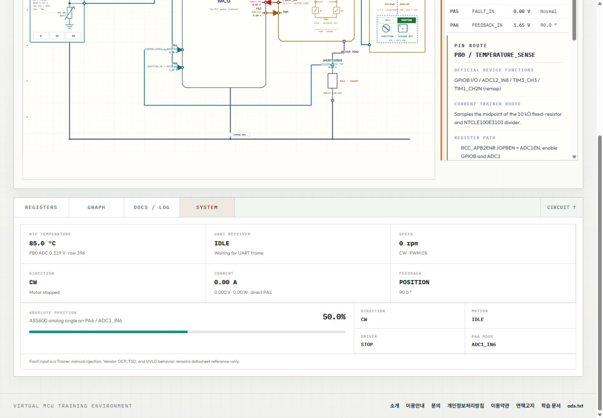
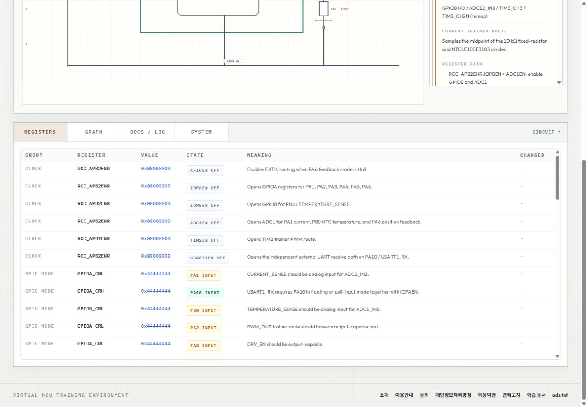
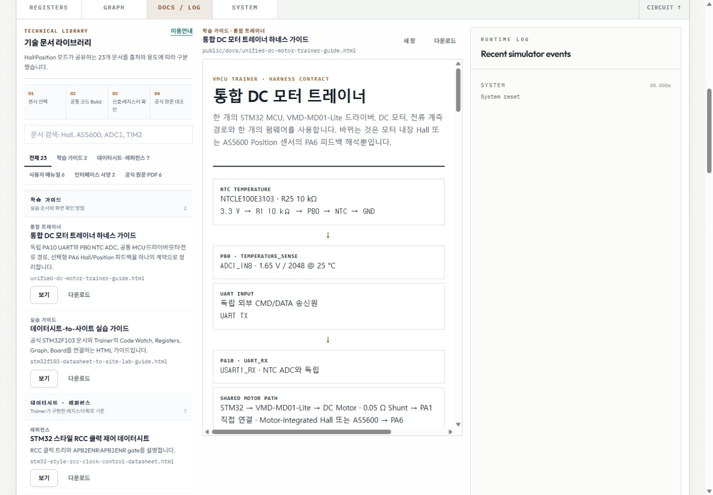

VMCU Lab은 C 펌웨어와 DC 모터 제어 회로를 함께 살펴보는 브라우저 실습 서비스입니다. 온도·위치 센서와 UART 입력을 조작하고, 핀·레지스터·시스템 상태를 학습 문서와 비교하며 제어 흐름을 익힙니다. STM32 스타일 주변장치와 단순화한 모터·센서 모델을 사용하는 교육용 환경입니다.
Virtual MCU Training Environment
서비스 소개
주요 기능
- 코드 실습 — C 펌웨어 편집과 Build·Step·Start·Stop 실행 조작
- 통합 회로 — MCU·H-Bridge·DC 모터·전류 센싱 경로와 핀별 기능·레지스터 연결 확인
- 입력·피드백 — NTC 온도 변경, 독립 UART CMD/DATA 입력, Hall·AS5600 위치 센서 전환
- 상태 관찰 — 레지스터 값·설정 의미, 그래프·로그, 온도·전류·속도·위치 상태 조회
- 학습 문서 — 가이드·데이터시트·사용자 매뉴얼·인터페이스 사양·제조사 원문 검색과 열람
실제 화면



